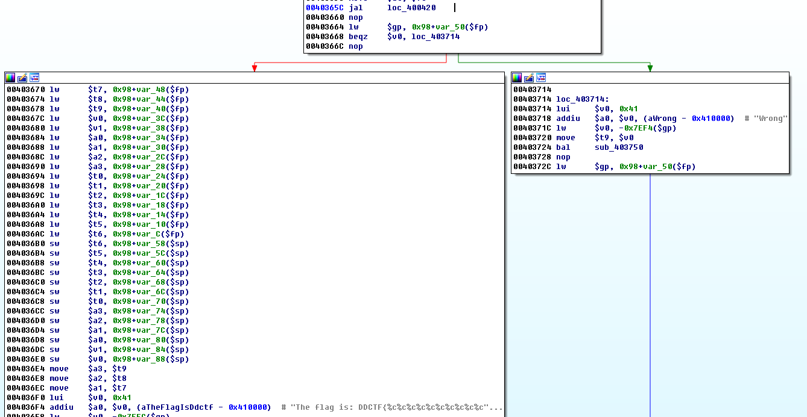
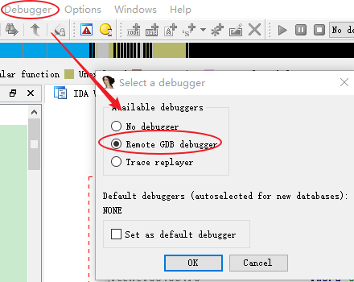
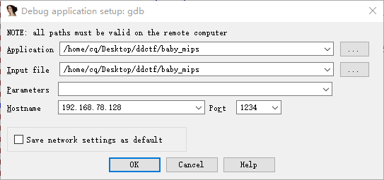
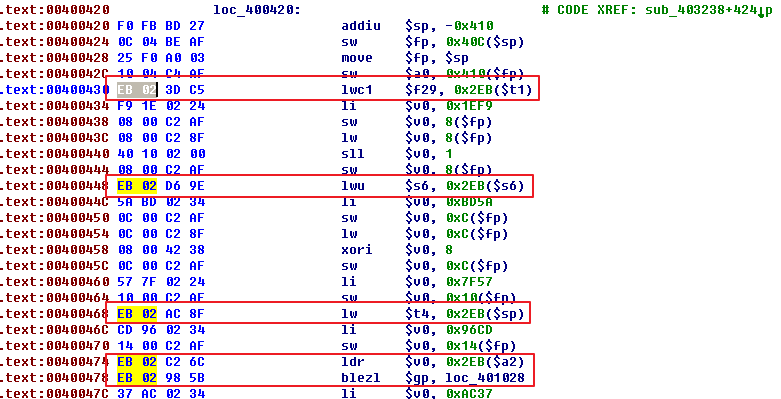
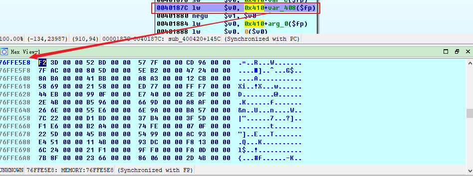
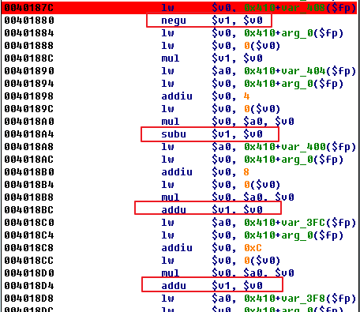

<!DOCTYPE html><html lang="zh-CN"><head><meta charset="UTF-8"><meta name="viewport" content="width=device-width,initial-scale=1,maximum-scale=2"><meta name="theme-color" content="#222"><meta name="generator" content="Hexo 5.2.0"><link rel="apple-touch-icon" sizes="180x180" href="/images/apple-touch-icon-next.png"><link rel="icon" type="image/png" sizes="32x32" href="/uploads/favicon_16.ico"><link rel="icon" type="image/png" sizes="16x16" href="/uploads/favicon_16.ico"><link rel="mask-icon" href="/images/logo.svg" color="#222"><meta http-equiv="Cache-Control" content="no-transform"><meta http-equiv="Cache-Control" content="no-siteapp"><meta name="google-site-verification" content="0d4t_hprsM6xsQKeGeYaBnGc8q8SZms2YKwT0JV7R1A"><meta name="msvalidate.01" content="FC470CF968AE82F56A6EF54706074EF7"><meta name="baidu-site-verification" content="yFjlb3QBTm"><link rel="stylesheet" href="/css/main.css"><link rel="stylesheet" href="//cdn.jsdelivr.net/npm/@fortawesome/fontawesome-free@5.14.0/css/all.min.css"><link rel="stylesheet" href="//cdn.jsdelivr.net/gh/fancyapps/fancybox@2.1.6/source/jquery.fancybox.css"><script id="hexo-configurations">var NexT=window.NexT||{},CONFIG={hostname:"cq674350529.github.io",root:"/",scheme:"Mist",version:"7.8.0",exturl:!0,sidebar:{position:"right",display:"post",padding:18,offset:12,onmobile:!1},copycode:{enable:!0,show_result:!0,style:"mac"},back2top:{enable:!0,sidebar:!1,scrollpercent:!1},bookmark:{enable:!1,color:"#222",save:"auto"},fancybox:!0,mediumzoom:!1,lazyload:!0,pangu:!1,comments:{style:"tabs",active:null,storage:!0,lazyload:!1,nav:null},algolia:{hits:{per_page:10},labels:{input_placeholder:"Search for Posts",hits_empty:"We didn't find any results for the search: ${query}",hits_stats:"${hits} results found in ${time} ms"}},localsearch:{enable:!0,trigger:"auto",top_n_per_article:1,unescape:!1,preload:!1},motion:{enable:!0,async:!1,transition:{post_block:"fadeIn",post_header:"slideDownIn",post_body:"slideDownIn",coll_header:"slideLeftIn",sidebar:"slideUpIn"}},path:"search.xml"}</script><meta name="description" content="背景baby_mips是DDCTF 2018 逆向的第1题，是MIPS指令架构的。MIPS指令架构是一种采用精简指令集的处理器架构，常用于路由器等嵌入式设备中。 静态分析使用file命令查看文件格式，如下。可以看到程序为MIPS架构 小端格式，同时是通过静态链接生成的。 12$ file baby_mipsbaby_mips: ELF 32-bit LSB executable, MIPS, MI"><meta property="og:type" content="article"><meta property="og:title" content="Solve baby_mips with angr"><meta property="og:url" content="https://cq674350529.github.io/2018/05/07/Solve-baby-mips-with-angr/index.html"><meta property="og:site_name" content="cq674350529&#39;s blog"><meta property="og:description" content="背景baby_mips是DDCTF 2018 逆向的第1题，是MIPS指令架构的。MIPS指令架构是一种采用精简指令集的处理器架构，常用于路由器等嵌入式设备中。 静态分析使用file命令查看文件格式，如下。可以看到程序为MIPS架构 小端格式，同时是通过静态链接生成的。 12$ file baby_mipsbaby_mips: ELF 32-bit LSB executable, MIPS, MI"><meta property="og:locale" content="zh_CN"><meta property="og:image" content="https://cq674350529.github.io/2018/05/07/Solve-baby-mips-with-angr/images/baby_mips_1.png"><meta property="og:image" content="https://cq674350529.github.io/2018/05/07/Solve-baby-mips-with-angr/images/baby_mips_2.png"><meta property="og:image" content="https://cq674350529.github.io/2018/05/07/Solve-baby-mips-with-angr/images/baby_mips_3.png"><meta property="og:image" content="https://cq674350529.github.io/2018/05/07/Solve-baby-mips-with-angr/images/baby_mips_4.png"><meta property="og:image" content="https://cq674350529.github.io/2018/05/07/Solve-baby-mips-with-angr/images/baby_mips_5.png"><meta property="og:image" content="https://cq674350529.github.io/2018/05/07/Solve-baby-mips-with-angr/images/baby_mips_6.png"><meta property="article:published_time" content="2018-05-07T04:49:23.000Z"><meta property="article:modified_time" content="2020-08-12T13:49:17.000Z"><meta property="article:author" content="cq674350529"><meta property="article:tag" content="逆向"><meta property="article:tag" content="angr"><meta name="twitter:card" content="summary"><meta name="twitter:image" content="https://cq674350529.github.io/2018/05/07/Solve-baby-mips-with-angr/images/baby_mips_1.png"><link rel="canonical" href="https://cq674350529.github.io/2018/05/07/Solve-baby-mips-with-angr/"><script id="page-configurations">CONFIG.page={sidebar:"",isHome:!1,isPost:!0,lang:"zh-CN"}</script><title>Solve baby_mips with angr | cq674350529's blog</title><noscript><style>.sidebar-inner,.use-motion .brand,.use-motion .collection-header,.use-motion .comments,.use-motion .menu-item,.use-motion .pagination,.use-motion .post-block,.use-motion .post-body,.use-motion .post-header{opacity:initial}.use-motion .site-subtitle,.use-motion .site-title{opacity:initial;top:initial}.use-motion .logo-line-before i{left:initial}.use-motion .logo-line-after i{right:initial}</style></noscript><link rel="alternate" href="/atom.xml" title="cq674350529's blog" type="application/atom+xml"></head><body itemscope itemtype="http://schema.org/WebPage"><div class="container use-motion"><div class="headband"></div><header class="header" itemscope itemtype="http://schema.org/WPHeader"><div class="header-inner"><div class="site-brand-container"><div class="site-nav-toggle"><div class="toggle" aria-label="切换导航栏"><span class="toggle-line toggle-line-first"></span> <span class="toggle-line toggle-line-middle"></span> <span class="toggle-line toggle-line-last"></span></div></div><div class="site-meta"><a href="/" class="brand" rel="start"><span class="logo-line-before"><i></i></span><h1 class="site-title">cq674350529's blog</h1><span class="logo-line-after"><i></i></span></a></div><div class="site-nav-right"><div class="toggle popup-trigger"><i class="fa fa-search fa-fw fa-lg"></i></div></div></div><nav class="site-nav"><ul id="menu" class="main-menu menu"><li class="menu-item menu-item-home"><a href="/" rel="section"><i class="fa fa-home fa-fw"></i>首页</a></li><li class="menu-item menu-item-archives"><a href="/archives/" rel="section"><i class="fa fa-archive fa-fw"></i>归档</a></li><li class="menu-item menu-item-categories"><a href="/categories/" rel="section"><i class="fa fa-th fa-fw"></i>分类</a></li><li class="menu-item menu-item-tags"><a href="/tags/" rel="section"><i class="fa fa-tags fa-fw"></i>标签</a></li><li class="menu-item menu-item-about"><a href="/about/" rel="section"><i class="fa fa-user fa-fw"></i>关于</a></li><li class="menu-item menu-item-search"><a role="button" class="popup-trigger"><i class="fa fa-search fa-fw"></i>搜索</a></li></ul></nav><div class="search-pop-overlay"><div class="popup search-popup"><div class="search-header"><span class="search-icon"><i class="fa fa-search"></i></span><div class="search-input-container"><input autocomplete="off" autocapitalize="off" placeholder="搜索..." spellcheck="false" type="search" class="search-input"></div><span class="popup-btn-close"><i class="fa fa-times-circle"></i></span></div><div id="search-result"><div id="no-result"><i class="fa fa-spinner fa-pulse fa-5x fa-fw"></i></div></div></div></div></div></header><div class="back-to-top"><i class="fa fa-arrow-up"></i> <span>0%</span></div><main class="main"><div class="main-inner"><div class="content-wrap"><div class="content post posts-expand"><article itemscope itemtype="http://schema.org/Article" class="post-block" lang="zh-CN"><link itemprop="mainEntityOfPage" href="https://cq674350529.github.io/2018/05/07/Solve-baby-mips-with-angr/"><span hidden itemprop="author" itemscope itemtype="http://schema.org/Person"><meta itemprop="image" content="/uploads/avatar_64.jpg"><meta itemprop="name" content="cq674350529"><meta itemprop="description" content="Talk is cheap. Show me the code."></span><span hidden itemprop="publisher" itemscope itemtype="http://schema.org/Organization"><meta itemprop="name" content="cq674350529's blog"></span><header class="post-header"><h1 class="post-title" itemprop="name headline">Solve baby_mips with angr</h1><div class="post-meta"><span class="post-meta-item"><span class="post-meta-item-icon"><i class="far fa-calendar"></i> </span><span class="post-meta-item-text">发表于</span> <time title="创建时间：2018-05-07 12:49:23" itemprop="dateCreated datePublished" datetime="2018-05-07T12:49:23+08:00">2018-05-07</time> </span><span class="post-meta-item"><span class="post-meta-item-icon"><i class="far fa-calendar-check"></i> </span><span class="post-meta-item-text">更新于</span> <time title="修改时间：2020-08-12 21:49:17" itemprop="dateModified" datetime="2020-08-12T21:49:17+08:00">2020-08-12</time> </span><span class="post-meta-item"><span class="post-meta-item-icon"><i class="far fa-folder"></i> </span><span class="post-meta-item-text">分类于</span> <span itemprop="about" itemscope itemtype="http://schema.org/Thing"><a href="/categories/CTF/" itemprop="url" rel="index"><span itemprop="name">CTF</span></a> </span></span><span id="/2018/05/07/Solve-baby-mips-with-angr/" class="post-meta-item leancloud_visitors" data-flag-title="Solve baby_mips with angr" title="阅读次数"><span class="post-meta-item-icon"><i class="fa fa-eye"></i> </span><span class="post-meta-item-text">阅读次数：</span> <span class="leancloud-visitors-count"></span> </span><span class="post-meta-item"><span class="post-meta-item-icon"><i class="far fa-comment"></i> </span><span class="post-meta-item-text">Valine：</span> <a title="valine" href="/2018/05/07/Solve-baby-mips-with-angr/#valine-comments" itemprop="discussionUrl"><span class="post-comments-count valine-comment-count" data-xid="/2018/05/07/Solve-baby-mips-with-angr/" itemprop="commentCount"></span></a></span></div></header><div class="post-body" itemprop="articleBody"><h3 id="背景"><a href="#背景" class="headerlink" title="背景"></a>背景</h3><p><code>baby_mips</code>是DDCTF 2018 逆向的第1题，是MIPS指令架构的。MIPS指令架构是一种采用精简指令集的处理器架构，常用于路由器等嵌入式设备中。</p><h3 id="静态分析"><a href="#静态分析" class="headerlink" title="静态分析"></a>静态分析</h3><p>使用<code>file</code>命令查看文件格式，如下。可以看到程序为MIPS架构 小端格式，同时是通过静态链接生成的。</p><figure class="highlight plain"><table><tr><td class="gutter"><pre><span class="line">1</span><br><span class="line">2</span><br></pre></td><td class="code"><pre><span class="line">$ file baby_mips</span><br><span class="line">baby_mips: ELF 32-bit LSB executable, MIPS, MIPS32 version 1 (SYSV), statically linked, stripped</span><br></pre></td></tr></table></figure><a id="more"></a><p>使用IDA Pro加载程序后，查看程序的字符串列表，如下：</p><figure class="highlight plain"><table><tr><td class="gutter"><pre><span class="line">1</span><br><span class="line">2</span><br><span class="line">3</span><br><span class="line">4</span><br><span class="line">5</span><br><span class="line">6</span><br><span class="line">7</span><br><span class="line">8</span><br><span class="line">9</span><br><span class="line">10</span><br><span class="line">11</span><br><span class="line">12</span><br><span class="line">13</span><br><span class="line">14</span><br><span class="line">15</span><br><span class="line">16</span><br><span class="line">17</span><br><span class="line">18</span><br><span class="line">19</span><br></pre></td><td class="code"><pre><span class="line">.rodata:00412FC0 00000009 C Var[0]:                                               </span><br><span class="line">.rodata:00412FD0 00000009 C Var[1]:                                               </span><br><span class="line">.rodata:00412FDC 00000009 C Var[2]:                                               </span><br><span class="line">.rodata:00412FE8 00000009 C Var[3]:                                               </span><br><span class="line">.rodata:00412FF4 00000009 C Var[4]:                                               </span><br><span class="line">.rodata:00413000 00000009 C Var[5]:                                               </span><br><span class="line">.rodata:0041300C 00000009 C Var[6]:                                               </span><br><span class="line">.rodata:00413018 00000009 C Var[7]:                                               </span><br><span class="line">.rodata:00413024 00000009 C Var[8]:                                               </span><br><span class="line">.rodata:00413030 00000009 C Var[9]:                                               </span><br><span class="line">.rodata:0041303C 0000000A C Var[10]:                                              </span><br><span class="line">.rodata:00413048 0000000A C Var[11]:                                              </span><br><span class="line">.rodata:00413054 0000000A C Var[12]:                                              </span><br><span class="line">.rodata:00413060 0000000A C Var[13]:                                              </span><br><span class="line">.rodata:0041306C 0000000A C Var[14]:                                              </span><br><span class="line">.rodata:00413078 0000000A C Var[15]:                                              </span><br><span class="line">.rodata:00413084 00000036 C The flag is: DDCTF&#123;%c%c%c%c%c%c%c%c%c%c%c%c%c%c%c%c&#125;\n</span><br><span class="line">.rodata:004130BC 00000006 C Wrong</span><br><span class="line">... ...</span><br></pre></td></tr></table></figure><p>查找字符串<code>The flag is: DDCTF ...</code>的交叉引用，进入sub_403238函数。在函数开始处，调用了sub_4044d0、sub_4038a0等函数，根据字符串信息，猜测可能是读取输入。之后，在0x40365c处跳转到loc_400420处执行代码，之后根据v0的值进行判断，如下：</p><p>跳转到loc_400420处，代码比较乱，存在很多IDA无法识别的代码块，同时中间夹杂着很多数据，导致无法分析具体的处理流程。下面尝试进行动态调试分析。</p><h3 id="动态分析"><a href="#动态分析" class="headerlink" title="动态分析"></a>动态分析</h3><h4 id="环境搭建"><a href="#环境搭建" class="headerlink" title="环境搭建"></a>环境搭建</h4><p>由于程序是MIPS指令架构的，而通常我们使用的电脑是x86架构的，无法直接运行该程序，这时可以借助Qemu模拟器来运行程序。QEMU是运行在用户层的开源全虚拟化解决方案，可以在Intel机器上虚拟出完整的操作系统 。QEMU主要有两种运作模式：</p><ul><li><code>User Mode</code>：即使用者模式，能单独运行那些为不同处理编译的Linux程序；</li><li><code>System Mode</code>：即系统模式，能够模拟整个系统，包括中央处理器及其他周边设备。</li></ul><p>由于<code>baby_mips</code>程序是通过静态链接生成的，为了方便，在<code>User Mode</code>下使用QEMU来运行该程序。以Ubuntu为例，首先安装qemu-static，如下：</p><figure class="highlight shell"><table><tr><td class="gutter"><pre><span class="line">1</span><br></pre></td><td class="code"><pre><span class="line"><span class="meta">$</span><span class="bash"> sudo apt-get install qemu-static</span></span><br></pre></td></tr></table></figure><p>安装完成后，运行该程序，如下。根据提示随便输入几个数字，提示<code>Illegal instruction</code>。</p><figure class="highlight shell"><table><tr><td class="gutter"><pre><span class="line">1</span><br><span class="line">2</span><br><span class="line">3</span><br><span class="line">4</span><br><span class="line">5</span><br><span class="line">6</span><br><span class="line">7</span><br><span class="line">8</span><br><span class="line">9</span><br><span class="line">10</span><br><span class="line">11</span><br><span class="line">12</span><br><span class="line">13</span><br><span class="line">14</span><br><span class="line">15</span><br><span class="line">16</span><br><span class="line">17</span><br><span class="line">18</span><br><span class="line">19</span><br></pre></td><td class="code"><pre><span class="line"><span class="meta">$</span><span class="bash"> qemu-mipsel-static ./baby_mips</span></span><br><span class="line">Var[0]: 0</span><br><span class="line">Var[1]: 1</span><br><span class="line">Var[2]: 2</span><br><span class="line">Var[3]: 3</span><br><span class="line">Var[4]: 4</span><br><span class="line">Var[5]: 5</span><br><span class="line">Var[6]: 6</span><br><span class="line">Var[7]: 7</span><br><span class="line">Var[8]: 8</span><br><span class="line">Var[9]: 9</span><br><span class="line">Var[10]: 10</span><br><span class="line">Var[11]: 11</span><br><span class="line">Var[12]: 12</span><br><span class="line">Var[13]: 13</span><br><span class="line">Var[14]: 14</span><br><span class="line">Var[15]: 15</span><br><span class="line">qemu: uncaught target signal 4 (Illegal instruction) - core dumped</span><br><span class="line">Illegal instruction (core dumped)</span><br></pre></td></tr></table></figure><p>下面通过动态调试来定位错误。</p><h4 id="动态调试"><a href="#动态调试" class="headerlink" title="动态调试"></a>动态调试</h4><p>qemu系列命令提供了一个<code>-g</code>选项，用来等待外部的gdb调试器连接。下面指定<code>1234</code>端口来等待调试器连接，如下：</p><figure class="highlight shell"><table><tr><td class="gutter"><pre><span class="line">1</span><br></pre></td><td class="code"><pre><span class="line"><span class="meta">$</span><span class="bash"> qemu-mipsel-static -g 1234 ./baby_mips</span></span><br></pre></td></tr></table></figure><p>之后可以采用gdb调试器来进行调试，这里使用IDA Pro来进行调试。首先选择调试器为”Remote GDB debugger”</p><p>之后，在”Debugger”-&gt;”Process options”中设置对应的参数</p><p>然后，点击”Debugger”-&gt;”Attach to process”即可开始调试。通过跟踪程序的执行流程，发现当程序运行到0x400430时会提示错误<code>Illegal instruction</code>。</p><figure class="highlight plain"><table><tr><td class="gutter"><pre><span class="line">1</span><br><span class="line">2</span><br><span class="line">3</span><br><span class="line">4</span><br><span class="line">5</span><br><span class="line">6</span><br><span class="line">7</span><br><span class="line">8</span><br><span class="line">9</span><br><span class="line">10</span><br><span class="line">11</span><br><span class="line">12</span><br><span class="line">13</span><br><span class="line">14</span><br><span class="line">15</span><br><span class="line">16</span><br></pre></td><td class="code"><pre><span class="line">.text:00400420 loc_400420:                              # CODE XREF: sub_403238+424p</span><br><span class="line">.text:00400420                 addiu   $sp, -0x410</span><br><span class="line">.text:00400424                 sw      $fp, 0x40C($sp)</span><br><span class="line">.text:00400428                 move    $fp, $sp</span><br><span class="line">.text:0040042C                 sw      $a0, 0x410($fp)</span><br><span class="line">.text:00400430                 lwc1    $f29, 0x2EB($t1)</span><br><span class="line">.text:00400434                 li      $v0, 0x1EF9</span><br><span class="line">.text:00400438                 sw      $v0, 8($fp)</span><br><span class="line">.text:0040043C                 lw      $v0, 8($fp)</span><br><span class="line">.text:00400440                 sll     $v0, 1</span><br><span class="line">.text:00400444                 sw      $v0, 8($fp)</span><br><span class="line">.text:00400448                 lwu     $s6, 0x2EB($s6)</span><br><span class="line">.text:0040044C                 li      $v0, 0xBD5A</span><br><span class="line">.text:00400450                 sw      $v0, 0xC($fp)</span><br><span class="line">.text:00400454                 lw      $v0, 0xC($fp)</span><br><span class="line">.text:00400458                 xori    $v0, 8</span><br></pre></td></tr></table></figure><p>查找<code>lwc1</code>指令的含义，发现是与协处理器相关的指令。通过对后面的代码块进行分析发现，后面并没有用到<code>$f29</code>和<code>$t1</code>寄存器的内容，于是尝试利用Keypatch插件直接将0x400430处的指令<code>lwc1 $f29, 0x2EB($t1)</code>给<code>nop</code>掉。之后，再次运行程序并进行调试，程序运行到0x400448时又报错。同样采用<code>nop</code>指令的方式patch后，程序运行到0x400468时再次报错。通过分析发现，这些报错的指令的机器码均以<code>EB 02</code>开始，因此尝试编写脚本将所有类似的指令<code>nop</code>掉。</p><h4 id="程序“修复”"><a href="#程序“修复”" class="headerlink" title="程序“修复”"></a>程序“修复”</h4><p>由于MIPS指令是定长的，均为4个字节。因此，可以在选定的代码块中，将所有以<code>EB 02</code>开始的4字节数据全部替换成<code>00 00 00 00</code>，脚本如下：</p><figure class="highlight python"><table><tr><td class="gutter"><pre><span class="line">1</span><br><span class="line">2</span><br><span class="line">3</span><br><span class="line">4</span><br><span class="line">5</span><br><span class="line">6</span><br><span class="line">7</span><br><span class="line">8</span><br><span class="line">9</span><br><span class="line">10</span><br><span class="line">11</span><br><span class="line">12</span><br><span class="line">13</span><br></pre></td><td class="code"><pre><span class="line"><span class="keyword">import</span> idautils</span><br><span class="line"><span class="keyword">import</span> idc</span><br><span class="line"><span class="keyword">import</span> idaapi</span><br><span class="line"></span><br><span class="line">start_addr = <span class="number">0x400420</span></span><br><span class="line">end_addr = <span class="number">0x403234</span></span><br><span class="line"><span class="keyword">while</span> start_addr &lt;= end_addr:</span><br><span class="line">    <span class="keyword">if</span> Byte(start_addr) == <span class="number">0xeb</span> <span class="keyword">and</span> Byte(start_addr +<span class="number">1</span>) == <span class="number">0x2</span>:</span><br><span class="line">        PatchByte(start_addr,<span class="number">0x00</span>)</span><br><span class="line">        PatchByte(start_addr+<span class="number">1</span>,<span class="number">0x00</span>)</span><br><span class="line">        PatchByte(start_addr+<span class="number">2</span>,<span class="number">0x00</span>)</span><br><span class="line">        PatchByte(start_addr+<span class="number">3</span>,<span class="number">0x00</span>)</span><br><span class="line">    start_addr += <span class="number">4</span></span><br></pre></td></tr></table></figure><blockquote><p>在MIPS指令中，<code>nop</code>对应的机器码为<code>00 00 00 00</code></p></blockquote><p>运行脚本后，选择”Edit”-&gt;”Patch program”-&gt;”Apply patch into input file…”，将更改保存到程序中。</p><p>之后，手动将从0x400420开始的代码块中夹杂的数据转换成代码，然后将0x400420处的代码转换成函数。之后就可以很清楚地看到函数0x400420内部的处理流程了。</p><h3 id="求解"><a href="#求解" class="headerlink" title="求解"></a>求解</h3><h4 id="angr求解"><a href="#angr求解" class="headerlink" title="angr求解"></a>angr求解</h4><p>通过对sub_0x400420函数内部的流程进行分析，其主要是对输入进行一系列运算，然后对运算结果进行校验，如果都满足则返回1，不满足则返回0。</p><p>虽然函数sub_0x400420内部的逻辑并不复杂，但是计算过程较多，比较繁琐，这时可以利用angr框架进行符号执行求解，而不用去理解具体的运算过程。angr是一个基于python的二进制漏洞分析框架，里面集成了多种主流的分析技术，能够进行动态的符号执行分析，也能够进行多种静态分析。近几年，其在CTF中的运用也很火。</p><p>通过静态分析可知，程序在0x40365c处调用sub_400420函数，其参数通过寄存器<code>a0</code>传递，然后返回值保存在<code>v0</code>寄存器中。之后对<code>v0</code>的内容进行判断，如果为1则输出flag(flag与用户输入的内容相关)，为0则输出”Wrong”。因此，只需要求解输入，保证sub_400420的返回值为1即可。</p><figure class="highlight plain"><table><tr><td class="gutter"><pre><span class="line">1</span><br><span class="line">2</span><br><span class="line">3</span><br><span class="line">4</span><br><span class="line">5</span><br><span class="line">6</span><br><span class="line">7</span><br><span class="line">8</span><br></pre></td><td class="code"><pre><span class="line">.text:00403650                 lw      $gp, 0x98+var_50($fp)</span><br><span class="line">.text:00403654                 addiu   $v0, $fp, 0x98+var_48</span><br><span class="line">.text:00403658                 move    $a0, $v0</span><br><span class="line">.text:0040365C                 jal     sub_400420</span><br><span class="line">.text:00403660                 nop</span><br><span class="line">.text:00403664                 lw      $gp, 0x98+var_50($fp)</span><br><span class="line">.text:00403668                 beqz    $v0, loc_403714</span><br><span class="line">.text:0040366C                 nop</span><br></pre></td></tr></table></figure><p>使用angr进行求解的脚本如下。其中，<code>find_address</code>是使得函数sub_400420返回值为1的地址，而<code>avoid_address</code>是使得函数sub_400420返回值为0的地址。同时，将输入的16个数字保存在内存地址0x10000000处，然后将其赋值给<code>a0</code>寄存器，实现参数的传递。之后，直接从函数sub_400420的开始处开始分析。</p><figure class="highlight python"><table><tr><td class="gutter"><pre><span class="line">1</span><br><span class="line">2</span><br><span class="line">3</span><br><span class="line">4</span><br><span class="line">5</span><br><span class="line">6</span><br><span class="line">7</span><br><span class="line">8</span><br><span class="line">9</span><br><span class="line">10</span><br><span class="line">11</span><br><span class="line">12</span><br><span class="line">13</span><br><span class="line">14</span><br><span class="line">15</span><br><span class="line">16</span><br><span class="line">17</span><br><span class="line">18</span><br><span class="line">19</span><br><span class="line">20</span><br><span class="line">21</span><br><span class="line">22</span><br><span class="line">23</span><br><span class="line">24</span><br><span class="line">25</span><br><span class="line">26</span><br><span class="line">27</span><br><span class="line">28</span><br><span class="line">29</span><br><span class="line">30</span><br><span class="line">31</span><br><span class="line">32</span><br><span class="line">33</span><br><span class="line">34</span><br></pre></td><td class="code"><pre><span class="line"><span class="comment">#!/usr/bin/env python</span></span><br><span class="line"></span><br><span class="line"><span class="keyword">import</span> angr</span><br><span class="line"></span><br><span class="line">project = angr.Project(<span class="string">&#x27;./baby_mips&#x27;</span>, load_options=&#123;<span class="string">&#x27;auto_load_libs&#x27;</span>:<span class="literal">False</span>&#125;)</span><br><span class="line"></span><br><span class="line">start_address = <span class="number">0x400420</span></span><br><span class="line">memory_address = <span class="number">0x10000000</span></span><br><span class="line"></span><br><span class="line">find_address = <span class="number">0x403220</span></span><br><span class="line">avoid_address = (<span class="number">0x401a08</span>, <span class="number">0x401ba0</span>,<span class="number">0x401d38</span>, <span class="number">0x401ed4</span>, <span class="number">0x402070</span>, <span class="number">0x40220c</span>, <span class="number">0x4023a4</span>, <span class="number">0x402540</span>, <span class="number">0x4026dc</span>, <span class="number">0x402878</span>, <span class="number">0x402a10</span>, <span class="number">0x402ba8</span>, <span class="number">0x402d44</span>, <span class="number">0x402edc</span>, <span class="number">0x403074</span>, <span class="number">0x403210</span>)</span><br><span class="line"></span><br><span class="line">state = project.factory.blank_state(addr=start_address, add_options=&#123;angr.options.LAZY_SOLVES&#125;)</span><br><span class="line"></span><br><span class="line"><span class="keyword">for</span> i <span class="keyword">in</span> xrange(<span class="number">16</span>):</span><br><span class="line">    state.memory.store(memory_address+i*<span class="number">4</span>, state.solver.BVS(<span class="string">&#x27;a%d&#x27;</span> % i, <span class="number">32</span>), endness=state.arch.memory_endness)</span><br><span class="line"></span><br><span class="line">state.regs.a0 = memory_address</span><br><span class="line"></span><br><span class="line"><span class="comment"># add LAZY_SOLVES to speed up</span></span><br><span class="line">simgr = project.factory.simulation_manager(state)</span><br><span class="line"></span><br><span class="line">simgr.explore(find=find_address, avoid=avoid_address)</span><br><span class="line"></span><br><span class="line"><span class="keyword">if</span> simgr.found:</span><br><span class="line">    find_state = simgr.found[<span class="number">0</span>]</span><br><span class="line"></span><br><span class="line">    <span class="comment"># add constraints to reduce the keyspace</span></span><br><span class="line">    <span class="keyword">for</span> i <span class="keyword">in</span> xrange(<span class="number">16</span>):</span><br><span class="line">        value = find_state.memory.load(memory_address+i*<span class="number">4</span>,<span class="number">4</span>, endness=find_state.arch.memory_endness)</span><br><span class="line">        find_state.add_constraints(value &gt; <span class="number">0</span>, value &lt; <span class="number">127</span>)</span><br><span class="line"></span><br><span class="line">    flag = [find_state.se.<span class="built_in">eval</span>(find_state.memory.load(memory_address+i*<span class="number">4</span>, <span class="number">4</span>, endness=find_state.arch.memory_endness)) <span class="keyword">for</span> i <span class="keyword">in</span> xrange(<span class="number">16</span>)]</span><br><span class="line">    <span class="built_in">print</span> <span class="string">&#x27;&#x27;</span>.join(<span class="built_in">map</span>(<span class="built_in">chr</span>,flag))</span><br></pre></td></tr></table></figure><h4 id="Z3求解"><a href="#Z3求解" class="headerlink" title="Z3求解"></a>Z3求解</h4><p>这里也给出使用Z3进行求解的过程。Z3是由微软开发的一个约束求解器，可以简单的理解它是解方程的神器。</p><p>函数sub_400420内部对参数的处理过程其实就是一个16元1次方程组，将输入看作是16个未知数，需要记录每个未知数前面的系数以及具体的运算过程。最直观的方式是单步跟踪程序的执行流程，一个一个地进行记录，但这个过程有点繁琐。通过分析，发现真正的计算是从0x40187c处开始，而且系数在内存空间是连续存放的。</p><figure class="highlight plain"><table><tr><td class="gutter"><pre><span class="line">1</span><br><span class="line">2</span><br><span class="line">3</span><br><span class="line">4</span><br><span class="line">5</span><br><span class="line">6</span><br><span class="line">7</span><br><span class="line">8</span><br><span class="line">9</span><br><span class="line">10</span><br><span class="line">11</span><br><span class="line">12</span><br><span class="line">13</span><br></pre></td><td class="code"><pre><span class="line">.text:0040187C                 lw      $v0, 0x410+var_408($fp)</span><br><span class="line">.text:00401880                 negu    $v1, $v0</span><br><span class="line">.text:00401884                 lw      $v0, 0x410+arg_0($fp)</span><br><span class="line">.text:00401888                 lw      $v0, 0($v0)</span><br><span class="line">.text:0040188C                 mul     $v1, $v0</span><br><span class="line">.text:00401890                 lw      $a0, 0x410+var_404($fp)</span><br><span class="line">.text:00401894                 lw      $v0, 0x410+arg_0($fp)</span><br><span class="line">.text:00401898                 addiu   $v0, 4</span><br><span class="line">.text:0040189C                 lw      $v0, 0($v0)</span><br><span class="line">.text:004018A0                 mul     $v0, $a0, $v0</span><br><span class="line">.text:004018A4                 subu    $v1, $v0</span><br><span class="line">.text:004018A8                 lw      $a0, 0x410+var_400($fp)</span><br><span class="line">.text:004018AC                 lw      $v0, 0x410+arg_0(</span><br></pre></td></tr></table></figure><p>因此可以直接在0x40187c处下断点，然后将<code>0x410+var_408($fp)</code>到<code>0x410+var_C($fp)</code>这段内存空间的内容在动态调试的过程中dump下来，如下：</p><p>然后再通过查看具体的运算操作指令即可</p><p>得到系数和具体的运算操作后，就可以使用Z3进行求解了，如下：</p><figure class="highlight python"><table><tr><td class="gutter"><pre><span class="line">1</span><br><span class="line">2</span><br><span class="line">3</span><br><span class="line">4</span><br><span class="line">5</span><br><span class="line">6</span><br><span class="line">7</span><br><span class="line">8</span><br><span class="line">9</span><br><span class="line">10</span><br><span class="line">11</span><br><span class="line">12</span><br><span class="line">13</span><br><span class="line">14</span><br><span class="line">15</span><br><span class="line">16</span><br><span class="line">17</span><br><span class="line">18</span><br><span class="line">19</span><br><span class="line">20</span><br><span class="line">21</span><br><span class="line">22</span><br><span class="line">23</span><br><span class="line">24</span><br><span class="line">25</span><br><span class="line">26</span><br><span class="line">27</span><br><span class="line">28</span><br><span class="line">29</span><br><span class="line">30</span><br><span class="line">31</span><br><span class="line">32</span><br><span class="line">33</span><br></pre></td><td class="code"><pre><span class="line"><span class="comment">#!/usr/bin/env python</span></span><br><span class="line"></span><br><span class="line"><span class="keyword">from</span> z3 <span class="keyword">import</span> *</span><br><span class="line"></span><br><span class="line">a = [BitVec(<span class="string">&#x27;a%d&#x27;</span> %i, <span class="number">32</span>) <span class="keyword">for</span> i <span class="keyword">in</span> xrange(<span class="number">16</span>)]</span><br><span class="line"></span><br><span class="line">s = Solver()</span><br><span class="line">s.add(<span class="number">0xffffc20e</span>*a[<span class="number">0</span>]-<span class="number">0xbd52</span>*a[<span class="number">1</span>]+<span class="number">0x7f57</span>*a[<span class="number">2</span>]+<span class="number">0x96cd</span>*a[<span class="number">3</span>]-<span class="number">0xac7f</span>*a[<span class="number">4</span>] +<span class="number">0x5d80</span>*a[<span class="number">5</span>]+<span class="number">0xb25e</span>*a[<span class="number">6</span>]+<span class="number">0x2447</span>*a[<span class="number">7</span>]+<span class="number">0xba8a</span>*a[<span class="number">8</span>]+<span class="number">0xbb41</span>*a[<span class="number">9</span>]+<span class="number">0xa3a8</span>*a[<span class="number">10</span>]+<span class="number">0xcb12</span>*a[<span class="number">11</span>]-<span class="number">0x6958</span>*a[<span class="number">12</span>]+<span class="number">0x5821</span>*a[<span class="number">13</span>]+<span class="number">0x77ed</span>*a[<span class="number">14</span>]+<span class="number">0xf7ff</span>*a[<span class="number">15</span>] == <span class="number">0x162f0ca</span> )</span><br><span class="line">s.add(<span class="number">0xeb44</span>*a[<span class="number">0</span>]-<span class="number">0x0f99</span>*a[<span class="number">1</span>] - <span class="number">0x40e7</span>*a[<span class="number">2</span>] +<span class="number">0xdf2e</span>*a[<span class="number">3</span>] -<span class="number">0x4b2e</span>*a[<span class="number">4</span>] -<span class="number">0x96b5</span>*a[<span class="number">5</span>] +<span class="number">0x9d66</span>*a[<span class="number">6</span>] -<span class="number">0xafa8</span>*a[<span class="number">7</span>] -<span class="number">0x6e26</span>*a[<span class="number">8</span>] -<span class="number">0xe655</span>*a[<span class="number">9</span>]- <span class="number">0x9a6e</span>*a[<span class="number">10</span>] +<span class="number">0x57ba</span>*a[<span class="number">11</span>] -<span class="number">0x227c</span>*a[<span class="number">12</span>] +<span class="number">0xbdd1</span>*a[<span class="number">13</span>] +<span class="number">0xb437</span>*a[<span class="number">14</span>] +<span class="number">0x5d3f</span>*a[<span class="number">15</span>]== <span class="number">0xffec2e48</span>)</span><br><span class="line">s.add(<span class="number">0xe6f1</span>*a[<span class="number">0</span>] +<span class="number">0xa4b2</span>*a[<span class="number">1</span>] -<span class="number">0xfe74</span>*a[<span class="number">2</span>] -<span class="number">0x0f07</span>*a[<span class="number">3</span>] -<span class="number">0x5d22</span>*a[<span class="number">4</span>] -<span class="number">0xb845</span>*a[<span class="number">5</span>] -<span class="number">0x9954</span>*a[<span class="number">6</span>] +<span class="number">0x93ac</span>*a[<span class="number">7</span>] -<span class="number">0x51e4</span>*a[<span class="number">8</span>] -<span class="number">0x4b11</span>*a[<span class="number">9</span>] +<span class="number">0xdc93</span>*a[<span class="number">10</span>] +<span class="number">0x13f8</span>*a[<span class="number">11</span>] +<span class="number">0x246c</span>*a[<span class="number">12</span>] +<span class="number">0xf121</span>*a[<span class="number">13</span>] +<span class="number">0xf09f</span>*a[<span class="number">14</span>] +<span class="number">0x0dfa</span>*a[<span class="number">15</span>] == <span class="number">0xd3c060</span>)</span><br><span class="line">s.add(<span class="number">0xffff7085</span>*a[<span class="number">0</span>] -<span class="number">0x6623</span>*a[<span class="number">1</span>] +<span class="number">0x0686</span>*a[<span class="number">2</span>] +<span class="number">0x4b2d</span>*a[<span class="number">3</span>] +<span class="number">0x68df</span>*a[<span class="number">4</span>] +<span class="number">0x9be7</span>*a[<span class="number">5</span>] +<span class="number">0x21b4</span>*a[<span class="number">6</span>] +<span class="number">0xe25a</span>*a[<span class="number">7</span>] -<span class="number">0xc807</span>*a[<span class="number">8</span>] +<span class="number">0xf695</span>*a[<span class="number">9</span>] -<span class="number">0x5421</span>*a[<span class="number">10</span>] -<span class="number">0x2469</span>*a[<span class="number">11</span>] +<span class="number">0x9f29</span>*a[<span class="number">12</span>] -<span class="number">0xe311</span>*a[<span class="number">13</span>] +<span class="number">0x78f2</span>*a[<span class="number">14</span>] -<span class="number">0x6bda</span>*a[<span class="number">15</span>] == <span class="number">0x8bf576</span>)</span><br><span class="line">s.add(<span class="number">0xffff07b8</span>*a[<span class="number">0</span>] -<span class="number">0xd048</span>*a[<span class="number">1</span>] -<span class="number">0x85f1</span>*a[<span class="number">2</span>] +<span class="number">0xee84</span>*a[<span class="number">3</span>] -<span class="number">0x37d1</span>*a[<span class="number">4</span>] +<span class="number">0xb74a</span>*a[<span class="number">5</span>] +<span class="number">0xcfe2</span>*a[<span class="number">6</span>]+ <span class="number">0x8f1e</span>*a[<span class="number">7</span>] -<span class="number">0xf211</span>*a[<span class="number">8</span>] -<span class="number">0x83bf</span>*a[<span class="number">9</span>] -<span class="number">0x1249</span>*a[<span class="number">10</span>] +<span class="number">0x7ea7</span>*a[<span class="number">11</span>] -<span class="number">0x4294</span>*a[<span class="number">12</span>] -<span class="number">0xb661</span>*a[<span class="number">13</span>] -<span class="number">0x8a73</span>*a[<span class="number">14</span>] -<span class="number">0x5e5c</span>*a[<span class="number">15</span>] == <span class="number">0xff4ea5b3</span>)</span><br><span class="line">s.add(<span class="number">0xffffd6b5</span>*a[<span class="number">0</span>] -<span class="number">0x2b5f</span>*a[<span class="number">1</span>]+ <span class="number">0xc981</span>*a[<span class="number">2</span>] -<span class="number">0x60c3</span>*a[<span class="number">3</span>] +<span class="number">0xf8f2</span>*a[<span class="number">4</span>]+ <span class="number">0xded7</span>*a[<span class="number">5</span>]- <span class="number">0xf6fb</span>*a[<span class="number">6</span>] +<span class="number">0x1083</span>*a[<span class="number">7</span>]- <span class="number">0xdc96</span>*a[<span class="number">8</span>]- <span class="number">0x587e</span>*a[<span class="number">9</span>] -<span class="number">0xb4f5</span>*a[<span class="number">10</span>] +<span class="number">0xf57a</span>*a[<span class="number">11</span>] +<span class="number">0x57d0</span>*a[<span class="number">12</span>] +<span class="number">0xe814</span>*a[<span class="number">13</span>] +<span class="number">0x6169</span>*a[<span class="number">14</span>] +<span class="number">0xf285</span>*a[<span class="number">15</span>] == <span class="number">0x9dd61e</span>)</span><br><span class="line">s.add(<span class="number">0xcd89</span>*a[<span class="number">0</span>] -<span class="number">0xd43d</span>*a[<span class="number">1</span>] +<span class="number">0xf037</span>*a[<span class="number">2</span>] +<span class="number">0x83a8</span>*a[<span class="number">3</span>] -<span class="number">0xa305</span>*a[<span class="number">4</span>] -<span class="number">0xadef</span>*a[<span class="number">5</span>] +<span class="number">0xcaaa</span>*a[<span class="number">6</span>] -<span class="number">0xf145</span>*a[<span class="number">7</span>]- <span class="number">0x6073</span>*a[<span class="number">8</span>]- <span class="number">0x2777</span>*a[<span class="number">9</span>] +<span class="number">0x794f</span>*a[<span class="number">10</span>] +<span class="number">0xf00e</span>*a[<span class="number">11</span>] -<span class="number">0xe7d5</span>*a[<span class="number">12</span>] +<span class="number">0x2654</span>*a[<span class="number">13</span>] -<span class="number">0xbed0</span>*a[<span class="number">14</span>] -<span class="number">0xb8af</span>*a[<span class="number">15</span>] == <span class="number">0xff6baab3</span>)</span><br><span class="line">s.add(<span class="number">0xffff6108</span>*a[<span class="number">0</span>] -<span class="number">0x6766</span>*a[<span class="number">1</span>] +<span class="number">0xd58e</span>*a[<span class="number">2</span>] -<span class="number">0x5ca3</span>*a[<span class="number">3</span>] +<span class="number">0x2718</span>*a[<span class="number">4</span>] +<span class="number">0x1e2b</span>*a[<span class="number">5</span>] -<span class="number">0xf49e</span>*a[<span class="number">6</span>] +<span class="number">0xcf78</span>*a[<span class="number">7</span>] +<span class="number">0x7c09</span>*a[<span class="number">8</span>] -<span class="number">0x13b7</span>*a[<span class="number">9</span>] -<span class="number">0xbeee</span>*a[<span class="number">10</span>]- <span class="number">0xe450</span>*a[<span class="number">11</span>] +<span class="number">0x4da3</span>*a[<span class="number">12</span>] -<span class="number">0x8880</span>*a[<span class="number">13</span>] -<span class="number">0x5691</span>*a[<span class="number">14</span>] +<span class="number">0x8bd8</span>*a[<span class="number">15</span>] == <span class="number">0xff818f06</span>)</span><br><span class="line">s.add(<span class="number">0xffffa564</span>*a[<span class="number">0</span>] -<span class="number">0xa95a</span>*a[<span class="number">1</span>] -<span class="number">0xe643</span>*a[<span class="number">2</span>] +<span class="number">0x0d38</span>*a[<span class="number">3</span>] -<span class="number">0x097a</span>*a[<span class="number">4</span>] -<span class="number">0xeb22</span>*a[<span class="number">5</span>] +<span class="number">0xcac3</span>*a[<span class="number">6</span>] -<span class="number">0x4ed1</span>*a[<span class="number">7</span>] -<span class="number">0x7c8a</span>*a[<span class="number">8</span>] +<span class="number">0xf107</span>*a[<span class="number">9</span>] +<span class="number">0xa59e</span>*a[<span class="number">10</span>]- <span class="number">0x1213</span>*a[<span class="number">11</span>] +<span class="number">0xb2b5</span>*a[<span class="number">12</span>] -<span class="number">0x7213</span>*a[<span class="number">13</span>] -<span class="number">0x2b83</span>*a[<span class="number">14</span>] -<span class="number">0xa155</span>*a[<span class="number">15</span>] == <span class="number">0xff8d50e7</span>)</span><br><span class="line">s.add(<span class="number">0xffff6c45</span>*a[<span class="number">0</span>] -<span class="number">0x2752</span>*a[<span class="number">1</span>] -<span class="number">0xbdc3</span>*a[<span class="number">2</span>] -<span class="number">0xf495</span>*a[<span class="number">3</span>] -<span class="number">0x7121</span>*a[<span class="number">4</span>] +<span class="number">0x9c41</span>*a[<span class="number">5</span>] -<span class="number">0x9465</span>*a[<span class="number">6</span>]- <span class="number">0x6ce3</span>*a[<span class="number">7</span>] -<span class="number">0x4f28</span>*a[<span class="number">8</span>] -<span class="number">0x8350</span>*a[<span class="number">9</span>] -<span class="number">0x176e</span>*a[<span class="number">10</span>] +<span class="number">0x7814</span>*a[<span class="number">11</span>] -<span class="number">0x739a</span>*a[<span class="number">12</span>] +<span class="number">0x5494</span>*a[<span class="number">13</span>] +<span class="number">0x142d</span>*a[<span class="number">14</span>] +<span class="number">0xca55</span>*a[<span class="number">15</span>] == <span class="number">0xff3f9826</span>)</span><br><span class="line">s.add(<span class="number">0xcf01</span>*a[<span class="number">0</span>] +<span class="number">0xf378</span>*a[<span class="number">1</span>] +<span class="number">0x1064</span>*a[<span class="number">2</span>] -<span class="number">0xd9a7</span>*a[<span class="number">3</span>] -<span class="number">0x077d</span>*a[<span class="number">4</span>]+ <span class="number">0x6dab</span>*a[<span class="number">5</span>] -<span class="number">0xaf1f</span>*a[<span class="number">6</span>]- <span class="number">0x3db7</span>*a[<span class="number">7</span>] +<span class="number">0x3554</span>*a[<span class="number">8</span>] -<span class="number">0xcb8e</span>*a[<span class="number">9</span>] -<span class="number">0x9815</span>*a[<span class="number">10</span>]+ <span class="number">0xf30b</span>*a[<span class="number">11</span>] +<span class="number">0x9c5e</span>*a[<span class="number">12</span>] -<span class="number">0x5d07</span>*a[<span class="number">13</span>] -<span class="number">0x4c31</span>*a[<span class="number">14</span>] +<span class="number">0xeae0</span>*a[<span class="number">15</span>] == <span class="number">0x213fed</span>)</span><br><span class="line">s.add(<span class="number">0x8bd4</span>*a[<span class="number">0</span>] -<span class="number">0x6d81</span>*a[<span class="number">1</span>] -<span class="number">0xe772</span>*a[<span class="number">2</span>] +<span class="number">0xb6f1</span>*a[<span class="number">3</span>] +<span class="number">0x9b57</span>*a[<span class="number">4</span>] -<span class="number">0x597d</span>*a[<span class="number">5</span>] +<span class="number">0x15d1</span>*a[<span class="number">6</span>]- <span class="number">0xa55e</span>*a[<span class="number">7</span>]+ <span class="number">0xfd13</span>*a[<span class="number">8</span>]+ <span class="number">0x17b4</span>*a[<span class="number">9</span>] +<span class="number">0xec78</span>*a[<span class="number">10</span>] -<span class="number">0xd51a</span>*a[<span class="number">11</span>] +<span class="number">0x56ad</span>*a[<span class="number">12</span>] -<span class="number">0xc319</span>*a[<span class="number">13</span>] +<span class="number">0x9f8e</span>*a[<span class="number">14</span>] +<span class="number">0xfa17</span>*a[<span class="number">15</span>] == <span class="number">0xa9f0dc</span>)</span><br><span class="line">s.add(<span class="number">0xffffb798</span>*a[<span class="number">0</span>] -<span class="number">0x8bef</span>*a[<span class="number">1</span>] +<span class="number">0x109d</span>*a[<span class="number">2</span>]- <span class="number">0xf9d4</span>*a[<span class="number">3</span>] +<span class="number">0x4ecf</span>*a[<span class="number">4</span>] +<span class="number">0xa896</span>*a[<span class="number">5</span>] +<span class="number">0x773b</span>*a[<span class="number">6</span>] +<span class="number">0x6e8a</span>*a[<span class="number">7</span>] -<span class="number">0x737c</span>*a[<span class="number">8</span>]+ <span class="number">0x4979</span>*a[<span class="number">9</span>] +<span class="number">0xc685</span>*a[<span class="number">10</span>] -<span class="number">0x96ae</span>*a[<span class="number">11</span>] +<span class="number">0x0bbd</span>*a[<span class="number">12</span>] +<span class="number">0x8280</span>*a[<span class="number">13</span>] +<span class="number">0xe3a9</span>*a[<span class="number">14</span>] -<span class="number">0x730c</span>*a[<span class="number">15</span>] == <span class="number">0xbdeb20</span>)</span><br><span class="line">s.add(<span class="number">0x0b20</span>*a[<span class="number">0</span>] +<span class="number">0x9b9c</span>*a[<span class="number">1</span>] +<span class="number">0xb4aa</span>*a[<span class="number">2</span>]+ <span class="number">0x6176</span>*a[<span class="number">3</span>] +<span class="number">0x9670</span>*a[<span class="number">4</span>] +<span class="number">0x7c9d</span>*a[<span class="number">5</span>] -<span class="number">0x5402</span>*a[<span class="number">6</span>] -<span class="number">0x8cd2</span>*a[<span class="number">7</span>] +<span class="number">0xac82</span>*a[<span class="number">8</span>] +<span class="number">0xa2f5</span>*a[<span class="number">9</span>] -<span class="number">0x8efd</span>*a[<span class="number">10</span>] -<span class="number">0x65f1</span>*a[<span class="number">11</span>] -<span class="number">0x94b9</span>*a[<span class="number">12</span>] +<span class="number">0x8cb8</span>*a[<span class="number">13</span>] +<span class="number">0x1cb5</span>*a[<span class="number">14</span>] +<span class="number">0x4aa1</span>*a[<span class="number">15</span>] == <span class="number">0x9c7cf5</span>)</span><br><span class="line">s.add(<span class="number">0x57fd</span>*a[<span class="number">0</span>] +<span class="number">0x3d83</span>*a[<span class="number">1</span>] +<span class="number">0xf745</span>*a[<span class="number">2</span>] +<span class="number">0xa5c4</span>*a[<span class="number">3</span>] -<span class="number">0x65fa</span>*a[<span class="number">4</span>] -<span class="number">0x58e9</span>*a[<span class="number">5</span>] +<span class="number">0xbebe</span>*a[<span class="number">6</span>] +<span class="number">0x1820</span>*a[<span class="number">7</span>] -<span class="number">0xd7b9</span>*a[<span class="number">8</span>] -<span class="number">0xb21f</span>*a[<span class="number">9</span>] -<span class="number">0x76a0</span>*a[<span class="number">10</span>] +<span class="number">0xc60d</span>*a[<span class="number">11</span>] +<span class="number">0x168f</span>*a[<span class="number">12</span>] +<span class="number">0x2a96</span>*a[<span class="number">13</span>] +<span class="number">0x31d6</span>*a[<span class="number">14</span>] -<span class="number">0x4b88</span>*a[<span class="number">15</span>] == <span class="number">0xd08e2</span>)</span><br><span class="line">s.add(<span class="number">0xffff1bae</span>*a[<span class="number">0</span>] -<span class="number">0xc7d4</span>*a[<span class="number">1</span>] -<span class="number">0x1554</span>*a[<span class="number">2</span>] +<span class="number">0x7eea</span>*a[<span class="number">3</span>] -<span class="number">0x684d</span>*a[<span class="number">4</span>] +<span class="number">0x6adb</span>*a[<span class="number">5</span>] +<span class="number">0x8534</span>*a[<span class="number">6</span>] -<span class="number">0x3a36</span>*a[<span class="number">7</span>] +<span class="number">0x29f0</span>*a[<span class="number">8</span>] +<span class="number">0xd3f2</span>*a[<span class="number">9</span>] -<span class="number">0x23e5</span>*a[<span class="number">10</span>] -<span class="number">0x6540</span>*a[<span class="number">11</span>] +<span class="number">0xbcd3</span>*a[<span class="number">12</span>] -<span class="number">0xef9b</span>*a[<span class="number">13</span>] +<span class="number">0xefdb</span>*a[<span class="number">14</span>] -<span class="number">0x774e</span>*a[<span class="number">15</span>] == <span class="number">0x178803</span>)</span><br><span class="line"></span><br><span class="line"><span class="keyword">for</span> item <span class="keyword">in</span> a:</span><br><span class="line">    s.add(item &gt; <span class="number">0</span>, item &lt; <span class="number">127</span>)</span><br><span class="line"></span><br><span class="line"><span class="keyword">if</span> s.check() == sat:</span><br><span class="line">    m = s.model()</span><br><span class="line">    flag = []</span><br><span class="line">    <span class="keyword">for</span> i <span class="keyword">in</span> xrange(<span class="number">16</span>):</span><br><span class="line">        flag.append(m[a[i]].as_long())</span><br><span class="line">    <span class="built_in">print</span> <span class="string">&#x27;&#x27;</span>.join(<span class="built_in">map</span>(<span class="built_in">chr</span>, flag))</span><br></pre></td></tr></table></figure><h3 id="其他"><a href="#其他" class="headerlink" title="其他"></a>其他</h3><p>IDA Pro暂时不支持将MISP汇编代码转换成类C代码，即所谓的F5功能。目前，可以反编译MIPS汇编代码的工具主要有两个：</p><ul><li><span class="exturl" data-url="aHR0cHM6Ly9yZXRkZWMuY29tL2hvbWUv">Retargetable Decompiler<i class="fa fa-external-link-alt"></i></span></li><li><span class="exturl" data-url="aHR0cHM6Ly93d3cucG5mc29mdHdhcmUuY29tL2plYjIvbWlwcw==">JEB Decompiler for MIPS<i class="fa fa-external-link-alt"></i></span></li></ul><h3 id="相关链接"><a href="#相关链接" class="headerlink" title="相关链接"></a>相关链接</h3><ul><li><span class="exturl" data-url="aHR0cHM6Ly93d3cucWVtdS5vcmcv">QEMU, the FAST! processor emulator<i class="fa fa-external-link-alt"></i></span></li><li><span class="exturl" data-url="aHR0cDovL3d3dy5rZXlzdG9uZS1lbmdpbmUub3JnL2tleXBhdGNoLw==">Keypatch<i class="fa fa-external-link-alt"></i></span></li><li><span class="exturl" data-url="aHR0cDovL2FuZ3IuaW8vaW5kZXguaHRtbF0=">angr<i class="fa fa-external-link-alt"></i></span></li><li><span class="exturl" data-url="aHR0cDovL2VyaWNwb255LmdpdGh1Yi5pby96M3B5LXR1dG9yaWFsL2d1aWRlLWV4YW1wbGVzLmh0bQ==">Z3 API in Python<i class="fa fa-external-link-alt"></i></span></li></ul><h3 id="附件下载"><a href="#附件下载" class="headerlink" title="附件下载"></a>附件下载</h3><p><a href="samples.zip">baby_mips</a></p></div><footer class="post-footer"><div class="post-tags"><a href="/tags/%E9%80%86%E5%90%91/" rel="tag"># 逆向</a> <a href="/tags/angr/" rel="tag"># angr</a></div><div class="post-nav"><div class="post-nav-item"><a href="/2016/04/27/2015%E5%BC%BA%E7%BD%91%E6%9D%AFpwn%E4%B9%8Bshellman/" rel="prev" title="2015强网杯pwn之shellman"><i class="fa fa-chevron-left"></i> 2015强网杯pwn之shellman</a></div><div class="post-nav-item"><a href="/2018/06/05/asis-ctf-2016-pwn-b00ks/" rel="next" title="asis-ctf-2016 pwn 之 b00ks">asis-ctf-2016 pwn 之 b00ks <i class="fa fa-chevron-right"></i></a></div></div></footer></article></div><div class="comments" id="valine-comments"></div><script>window.addEventListener('tabs:register', () => {
    let { activeClass } = CONFIG.comments;
    if (CONFIG.comments.storage) {
      activeClass = localStorage.getItem('comments_active') || activeClass;
    }
    if (activeClass) {
      let activeTab = document.querySelector(`a[href="#comment-${activeClass}"]`);
      if (activeTab) {
        activeTab.click();
      }
    }
  });
  if (CONFIG.comments.storage) {
    window.addEventListener('tabs:click', event => {
      if (!event.target.matches('.tabs-comment .tab-content .tab-pane')) return;
      let commentClass = event.target.classList[1];
      localStorage.setItem('comments_active', commentClass);
    });
  }</script></div><div class="toggle sidebar-toggle"><span class="toggle-line toggle-line-first"></span> <span class="toggle-line toggle-line-middle"></span> <span class="toggle-line toggle-line-last"></span></div><aside class="sidebar"><div class="sidebar-inner"><ul class="sidebar-nav motion-element"><li class="sidebar-nav-toc">文章目录</li><li class="sidebar-nav-overview">站点概览</li></ul><div class="post-toc-wrap sidebar-panel"><div class="post-toc motion-element"><ol class="nav"><li class="nav-item nav-level-3"><a class="nav-link" href="#%E8%83%8C%E6%99%AF"><span class="nav-number">1.</span> <span class="nav-text">背景</span></a></li><li class="nav-item nav-level-3"><a class="nav-link" href="#%E9%9D%99%E6%80%81%E5%88%86%E6%9E%90"><span class="nav-number">2.</span> <span class="nav-text">静态分析</span></a></li><li class="nav-item nav-level-3"><a class="nav-link" href="#%E5%8A%A8%E6%80%81%E5%88%86%E6%9E%90"><span class="nav-number">3.</span> <span class="nav-text">动态分析</span></a><ol class="nav-child"><li class="nav-item nav-level-4"><a class="nav-link" href="#%E7%8E%AF%E5%A2%83%E6%90%AD%E5%BB%BA"><span class="nav-number">3.1.</span> <span class="nav-text">环境搭建</span></a></li><li class="nav-item nav-level-4"><a class="nav-link" href="#%E5%8A%A8%E6%80%81%E8%B0%83%E8%AF%95"><span class="nav-number">3.2.</span> <span class="nav-text">动态调试</span></a></li><li class="nav-item nav-level-4"><a class="nav-link" href="#%E7%A8%8B%E5%BA%8F%E2%80%9C%E4%BF%AE%E5%A4%8D%E2%80%9D"><span class="nav-number">3.3.</span> <span class="nav-text">程序“修复”</span></a></li></ol></li><li class="nav-item nav-level-3"><a class="nav-link" href="#%E6%B1%82%E8%A7%A3"><span class="nav-number">4.</span> <span class="nav-text">求解</span></a><ol class="nav-child"><li class="nav-item nav-level-4"><a class="nav-link" href="#angr%E6%B1%82%E8%A7%A3"><span class="nav-number">4.1.</span> <span class="nav-text">angr求解</span></a></li><li class="nav-item nav-level-4"><a class="nav-link" href="#Z3%E6%B1%82%E8%A7%A3"><span class="nav-number">4.2.</span> <span class="nav-text">Z3求解</span></a></li></ol></li><li class="nav-item nav-level-3"><a class="nav-link" href="#%E5%85%B6%E4%BB%96"><span class="nav-number">5.</span> <span class="nav-text">其他</span></a></li><li class="nav-item nav-level-3"><a class="nav-link" href="#%E7%9B%B8%E5%85%B3%E9%93%BE%E6%8E%A5"><span class="nav-number">6.</span> <span class="nav-text">相关链接</span></a></li><li class="nav-item nav-level-3"><a class="nav-link" href="#%E9%99%84%E4%BB%B6%E4%B8%8B%E8%BD%BD"><span class="nav-number">7.</span> <span class="nav-text">附件下载</span></a></li></ol></div></div><div class="site-overview-wrap sidebar-panel"><div class="site-author motion-element" itemprop="author" itemscope itemtype="http://schema.org/Person"><p class="site-author-name" itemprop="name">cq674350529</p><div class="site-description" itemprop="description">Talk is cheap. Show me the code.</div></div><div class="site-state-wrap motion-element"><nav class="site-state"><div class="site-state-item site-state-posts"><a href="/archives/"><span class="site-state-item-count">21</span> <span class="site-state-item-name">日志</span></a></div><div class="site-state-item site-state-categories"><a href="/categories/"><span class="site-state-item-count">5</span> <span class="site-state-item-name">分类</span></a></div><div class="site-state-item site-state-tags"><a href="/tags/"><span class="site-state-item-count">12</span> <span class="site-state-item-name">标签</span></a></div></nav></div><div class="links-of-author motion-element"><span class="links-of-author-item"><span class="exturl" data-url="aHR0cHM6Ly9naXRodWIuY29tL2NxNjc0MzUwNTI5" title="GitHub → https:&#x2F;&#x2F;github.com&#x2F;cq674350529"><i class="fab fa-github fa-fw"></i>GitHub</span> </span><span class="links-of-author-item"><span class="exturl" data-url="bWFpbHRvOmNxNjc0MzUwNTI5QDE2My5jb20=" title="E-Mail → mailto:cq674350529@163.com"><i class="fa fa-envelope fa-fw"></i>E-Mail</span> </span><span class="links-of-author-item"><span class="exturl" data-url="aHR0cHM6Ly90d2l0dGVyLmNvbS9jcTY3NDM1MDUyOQ==" title="Twitter → https:&#x2F;&#x2F;twitter.com&#x2F;cq674350529"><i class="fab fa-twitter fa-fw"></i>Twitter</span> </span><span class="links-of-author-item"><a href="https://cq674350529.github.io/atom.xml" title="RSS → https:&#x2F;&#x2F;cq674350529.github.io&#x2F;atom.xml"><i class="fa fa-rss fa-fw"></i>RSS</a></span></div><div class="links-of-blogroll motion-element"><div class="links-of-blogroll-title"><i class="fa fa-link fa-fw"></i> 推荐</div><ul class="links-of-blogroll-list"><li class="links-of-blogroll-item"><span class="exturl" data-url="aHR0cDovL3d3dy5kZXZ0dHlzMC5jb20vYmxvZy8=" title="http:&#x2F;&#x2F;www.devttys0.com&#x2F;blog&#x2F;">/dev/ttyS0</span></li><li class="links-of-blogroll-item"><span class="exturl" data-url="aHR0cHM6Ly9hemVyaWEtbGFicy5jb20vd3JpdGluZy1hcm0tYXNzZW1ibHktcGFydC0xLw==" title="https:&#x2F;&#x2F;azeria-labs.com&#x2F;writing-arm-assembly-part-1&#x2F;">Azeria Labs</span></li><li class="links-of-blogroll-item"><span class="exturl" data-url="aHR0cHM6Ly9vbGQubGl2ZW92ZXJmbG93LmNvbS9pbmRleC5odG1s" title="https:&#x2F;&#x2F;old.liveoverflow.com&#x2F;index.html">LiveOverflow</span></li><li class="links-of-blogroll-item"><span class="exturl" data-url="aHR0cHM6Ly9zY3JpcHRpbmd4c3MuZ2l0Ym9vay5pby9maXJtd2FyZS1zZWN1cml0eS10ZXN0aW5nLW1ldGhvZG9sb2d5Lw==" title="https:&#x2F;&#x2F;scriptingxss.gitbook.io&#x2F;firmware-security-testing-methodology&#x2F;">OWASP FSTM</span></li></ul></div></div></div></aside><div id="sidebar-dimmer"></div></div></main><footer class="footer"><div class="footer-inner"><div class="copyright">&copy; 2016 – <span itemprop="copyrightYear">2021</span> <span class="with-love"><i class="fa fa-heart"></i> </span><span class="author" itemprop="copyrightHolder">cq674350529</span></div><script>(function() {
    function leancloudSelector(url) {
      url = encodeURI(url);
      return document.getElementById(url).querySelector('.leancloud-visitors-count');
    }

    function addCount(Counter) {
      var visitors = document.querySelector('.leancloud_visitors');
      var url = decodeURI(visitors.id);
      var title = visitors.dataset.flagTitle;

      Counter('get', '/classes/Counter?where=' + encodeURIComponent(JSON.stringify({ url })))
        .then(response => response.json())
        .then(({ results }) => {
          if (results.length > 0) {
            var counter = results[0];
            leancloudSelector(url).innerText = counter.time + 1;
            Counter('put', '/classes/Counter/' + counter.objectId, { time: { '__op': 'Increment', 'amount': 1 } })
              .catch(error => {
                console.error('Failed to save visitor count', error);
              });
          } else {
              Counter('post', '/classes/Counter', { title, url, time: 1 })
                .then(response => response.json())
                .then(() => {
                  leancloudSelector(url).innerText = 1;
                })
                .catch(error => {
                  console.error('Failed to create', error);
                });
          }
        })
        .catch(error => {
          console.error('LeanCloud Counter Error', error);
        });
    }

    function showTime(Counter) {
      var visitors = document.querySelectorAll('.leancloud_visitors');
      var entries = [...visitors].map(element => {
        return decodeURI(element.id);
      });

      Counter('get', '/classes/Counter?where=' + encodeURIComponent(JSON.stringify({ url: { '$in': entries } })))
        .then(response => response.json())
        .then(({ results }) => {
          for (let url of entries) {
            let target = results.find(item => item.url === url);
            leancloudSelector(url).innerText = target ? target.time : 0;
          }
        })
        .catch(error => {
          console.error('LeanCloud Counter Error', error);
        });
    }

    let { app_id, app_key, server_url } = {"enable":true,"app_id":"rmMxusPPlEafDgjvi8lBiuOB-MdYXbMMI","app_key":"nN8G8UGTqCQXFaBR6GajW5hD","server_url":null,"security":false,"betterPerformance":false};
    function fetchData(api_server) {
      var Counter = (method, url, data) => {
        return fetch(`${api_server}/1.1${url}`, {
          method,
          headers: {
            'X-LC-Id'     : app_id,
            'X-LC-Key'    : app_key,
            'Content-Type': 'application/json',
          },
          body: JSON.stringify(data)
        });
      };
      if (CONFIG.page.isPost) {
        if (CONFIG.hostname !== location.hostname) return;
        addCount(Counter);
      } else if (document.querySelectorAll('.post-title-link').length >= 1) {
        showTime(Counter);
      }
    }

    let api_server = app_id.slice(-9) !== '-MdYXbMMI' ? server_url : `https://${app_id.slice(0, 8).toLowerCase()}.api.lncldglobal.com`;

    if (api_server) {
      fetchData(api_server);
    } else {
      fetch('https://app-router.leancloud.cn/2/route?appId=' + app_id)
        .then(response => response.json())
        .then(({ api_server }) => {
          fetchData('https://' + api_server);
        });
    }
  })();</script></div></footer></div><script src="/lib/anime.min.js"></script><script src="//cdn.jsdelivr.net/npm/jquery@3/dist/jquery.min.js"></script><script src="//cdn.jsdelivr.net/gh/fancyapps/fancybox@2.1.6/source/jquery.fancybox.pack.js"></script><script src="//cdn.jsdelivr.net/npm/lozad@1/dist/lozad.min.js"></script><script src="/lib/velocity/velocity.min.js"></script><script src="/lib/velocity/velocity.ui.min.js"></script><script src="/js/utils.js"></script><script src="/js/motion.js"></script><script src="/js/schemes/muse.js"></script><script src="/js/next-boot.js"></script><script>!function(){var e,t,o,n,r=document.getElementsByTagName("link");if(0<r.length)for(i=0;i<r.length;i++)"canonical"==r[i].rel.toLowerCase()&&r[i].href&&(e=r[i].href);t=(e||window.location.protocol).split(":")[0],e=e||window.location.href,window,o=e,n=document.referrer,/([http|https]:\/\/[a-zA-Z0-9\_\.]+\.baidu\.com)/gi.test(o)||(t="https"===String(t).toLowerCase()?"https://sp0.baidu.com/9_Q4simg2RQJ8t7jm9iCKT-xh_/s.gif":"//api.share.baidu.com/s.gif",n?(t+="?r="+encodeURIComponent(document.referrer),o&&(t+="&l="+o)):o&&(t+="?l="+o),(new Image).src=t)}()</script><script src="/js/local-search.js"></script><script>NexT.utils.loadComments(document.querySelector('#valine-comments'), () => {
  NexT.utils.getScript('//unpkg.com/valine/dist/Valine.min.js', () => {
    var GUEST = ['nick', 'mail', 'link'];
    var guest = 'nick,mail,link';
    guest = guest.split(',').filter(item => {
      return GUEST.includes(item);
    });
    new Valine({
      el         : '#valine-comments',
      verify     : true,
      notify     : true,
      appId      : 'rmMxusPPlEafDgjvi8lBiuOB-MdYXbMMI',
      appKey     : 'nN8G8UGTqCQXFaBR6GajW5hD',
      placeholder: ":)填上邮箱可以收到回复邮件",
      avatar     : 'mm',
      meta       : guest,
      pageSize   : '10' || 10,
      visitor    : false,
      lang       : '' || 'zh-cn',
      path       : location.pathname,
      recordIP   : true,
      serverURLs : ''
    });
  }, window.Valine);
});</script></body></html>